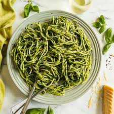

Green Pesto Pasta

- Ingredients
- 1/2 cup of pesto
- 300 – 350 g / 10 – 12 oz pasta of choice
- 2 tsp salt
- 3/4 cup pasta cooking water
- Parmesan, for serving
- Instructions
- STEP 1 Bring a large pot of water to the boil with the salt.
- STEP 2 Add pasta and cook for the length of time per the packet.
- STEP 3 Just before draining, scoop out 1 cup of of the pasta cooking water.
- STEP 4 Drain pasta in a colander, leave it for a minute.
- STEP 5 Transfer pasta to a bowl (do not use pasta cooking pot, too hot).
- STEP 6 Add pesto and 1/4 cup of pasta water. Toss to coat pasta in pesto, adding more water if required to make pasta silky and saucy, rather than dry and sticky.
- STEP 7 Taste, add more salt and pepper if desired.
- STEP 8 Serve immediately, garnished with fresh parmesan.